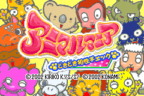

Animal Mania - Dokidoki Aishou Check (Japan)
SRAM 256K
Cartridge Identity
- Game Code
AANJ(FamilyAAN)- Header Title
ANIMALMANIA1- Maker / Revision
A4/ rev0- ROM Size
- 4.0 MiB (4,194,304 B)
- Save Media
SRAM 256K- SHA-256
291e6d7c397ac047067a7867bf8ae5589235d4421447e2cdb676420474de62b7
Screenshots


Observed Battery Save Layout
- Fill Byte & Active Size
0xFFfill · 5,040–5,040 / 32,768 B active (entropy 2.02 bits/B)- Active Offset Ranges
0x0–0x5,0x7–0x19,0x1B–0x2D,0x2F–0x41,0x43–0x55,0x57–0x69,0x6B–0x7D,0x7F–0x91, +8 more (305 total)- ASCII Magic / Headers
hKEJ,E4pQ,0R.Q,.ANIMAL MANIA AGBANIMAL MANIA AG- Observed Variable Regions
- 0 bytes across 0 spans: None
- Candidate Checksum/Counter Spans
- None
Hardware MMIO Subsystems
ppu_display0x8001a10,0x8002408,0x80024c8,0x8002570,0x8020024save_bus_sram_flash0x8005b94